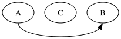
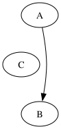
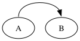
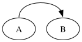

EXCLUDED at SR5. The non-adjacent flat box branch is ported (A:n->B:n exact, A:e->B:w 0.25pt). Two families remain: bottom-tail (:s) constant offset, and adjacent flat (needs the deferred make_flat_adj_edges).
The drawings below are the actual rendered SVGs — the visual match is the test. Backgrounds are a checker pattern so white fills show.




Bottom-tail A:s->B:s — every point off a constant 7.06pt in y; X exact.
| pt | dot 15.0.0 | graphviz-ts | Δ |
|---|---|---|---|
| 0 | 27.00,-24.50 | 27.00,-31.56 | 7.06 |
| 1 | 27.00,3.75 | 27.00,-3.31 | 7.06 |
| 2 | 139.23,7.06 | 139.23,0.00 | 7.06 |
| 3 | 165.53,-14.57 | 165.53,-21.63 | 7.06 |
Root cause 1 — bottom-tail (:s) is the drawing transform, NOT a routing error. The constant 7.06pt offset is exactly the graph-transform delta: dot emits translate(4, 64.5), graphviz-ts translate(4, 71.56) — difference 7.06. The edge spline is identical in internal (un-transformed) coordinates; only the drawing bbox (viewBox height 68 vs 76) and its derived translate differ, shifting every rendered point by a constant. This is the same bbox-extent divergence as port-golden-bbox (the loop dips below the node baseline; TS reserves ~8pt more bbox below). The flat routing is faithful.
Root cause 2 — adjacent endpoints are a different algorithm (the real shape disagreement). When A and B are adjacent (no node between them), routeFlatEdgeFaithful returns null — the 3-box channel self-intersects for close nodes, so routeSplines rejects it — and the edge falls back to the simplified fitter, which draws a straight segment ignoring the ports. dot never uses the box channel here: make_flat_edge dispatches adjacent edges to make_flat_adj_edges, which clones the graph, lays out a 90°-rotated subgraph (dot_rank/mincross/position/splines), and copies the routed spline back via transformf. TS’s makeFlatAdjEdges runs the aux layout but the spline copy-back is deferred — hence the straight line instead of dot’s loop.
SR5 covers the faithful non-adjacent box branch (top/lateral, matched to ≤0.25pt). The two divergences are now root-caused: (1) bottom-tail is the shared drawing-bbox extent (geometry faithful); (2) adjacent needs the deferred make_flat_adj_edges recursive pipeline + transformf copy-back — a substantial separate port (recommended follow-up). No 115-golden uses a flat edge, so output is byte-stable.